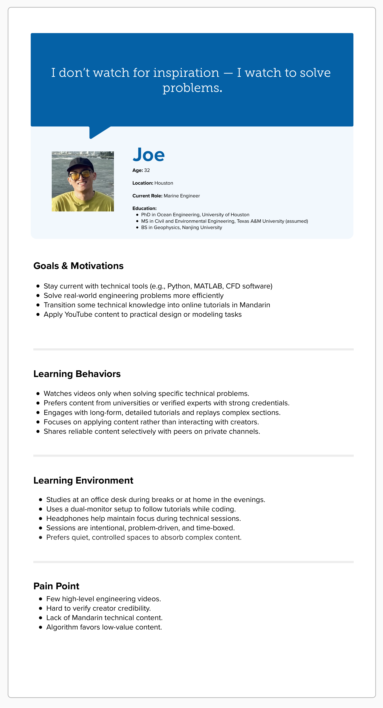
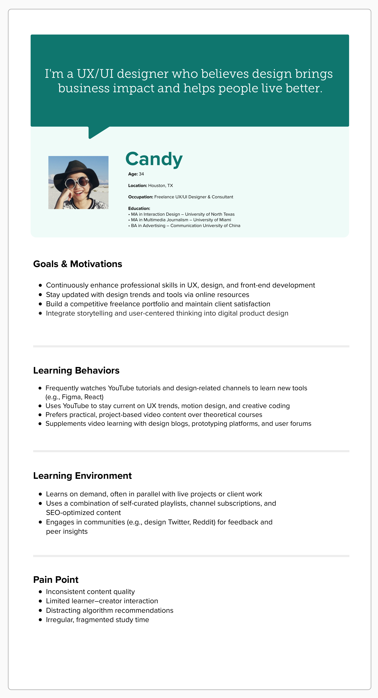
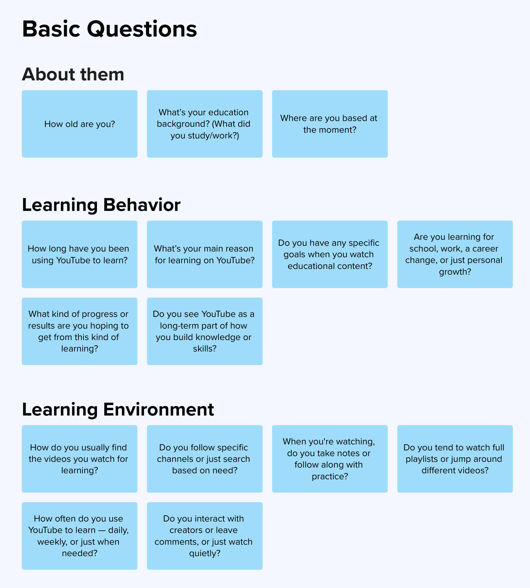
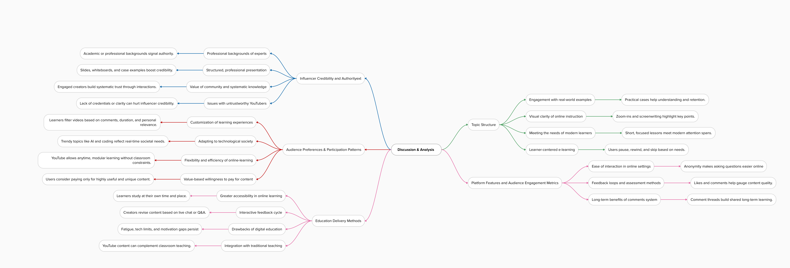

Research Audience and Reception｜A Qualitative Case Study of the Impact of Online Educational Practices
Audience Research, Digital Platform, Qualitative Interview, Framing Analysis
2024
Challenge
Understand how YouTube educational influencers shape learning outcomes and challenge traditional education models through informal, audience-driven practices.
Deliverables
Produced a qualitative case study using framing theory and content analysis, uncovering learner preferences, influencer credibility, teaching formats, and platform engagement dynamics.
Background
This study explores how YouTube educational influencers shape self-directed learning and impact traditional education through interactive, algorithm-driven content. Using framing theory and qualitative analysis, it highlights how influencers build credibility, engage audiences, and adapt teaching methods to platform features. The findings reveal shifting learner preferences and underscore YouTube’s growing role in supplementing formal education, particularly among younger and highly educated users.
Research Questions
Q1: How do educational influencers on YouTube convey learning?
SQ: How does this trend integrate with and challenge traditional educational practices?
Methodology
This study uses qualitative interviews and content analysis to investigate social media users' tendencies to seek out individuals who post specific knowledge.
Data Collection and Sampling
Purposive sampling was conducted for semi-structured interviews.
Framing Analysis
By selectively emphasizing various features of YouTube's role in education, it can effectively guide viewers' attention and comprehension, thereby impacting their learning outcomes and educational experiences. Five main categories are established:
- Audience preferences and participation patterns
- Influencers' credibility and authority
- Thematic structure
- Teaching methods
- Platform functionality for feedback and audience engagement indicators
Personas


Basic Questions

Based-Research Questions
Audience Preferences and Participation Patterns
- Could you please describe in detail how you typically engage with educational content on YouTube, and what factors influence your choice of influencers or channels?
- Which types of educational content do you find most attractive and valuable on social media platforms, and would you consider participating in paid teaching services offered by YouTube educational influencers?
Influencer Credibility and Authority
- How do you evaluate the credibility and expertise of educational influencers on YouTube, and what indicators contribute to your perception of their knowledge and authority?
- Can you provide further insight into how educational influencers construct their content to convey expertise and credibility, and what visual or verbal cues they use to establish authority?
Topic Structure
- In your opinion, how does the teaching style of YouTube educational bloggers influence your engagement and understanding of the material?
- Have you noticed any differences in the teaching methods used by educational YouTubers compared to traditional classroom instruction? If so, how do they support or challenge your learning experience in a traditional classroom setting?
Education Delivery Methods
- When watching educational videos on YouTube, how do content delivery and audience interaction differ from those of traditional educators in helping you grasp complex concepts? Could you provide specific examples?
- Can you recall a specific instance where the use of visual effects in an educational video significantly enhanced your understanding or retention of the material?
Platform Features and Audience Engagement Metrics on Result Feedback
- How do educational influencers utilize YouTube's features to enhance the audience's learning experience, and how does this compare to a traditional classroom environment? How do you provide feedback to educational YouTubers regarding the effectiveness of their content in facilitating your learning?
- What roles do comments, likes, and shares play in influencing your decision to engage with educational content on social media platforms? Has educational content on YouTube changed or improved based on feedback from viewers like yourself? If so, could you provide specific examples?
Discussion & Analysis
